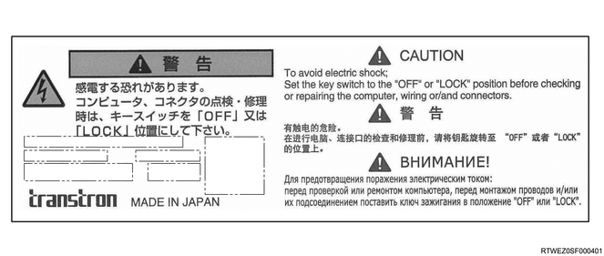

ECM maintenance precaution
The exclamation mark warns you of an electric shock hazard. To avoid shock and possible serious injury, DO NOT touch the terminals. When disconnecting the harness connectors, always turn OFF the ignition switch or disconnect the battery ground cable.

Commercial electrical and vacuum equipment
Commercial or add-on electrical and vacuum equipment is defined as any equipment which connects to the vehicle's electrical or vacuum systems that is installed on a vehicle after the vehicle was shipped from the factory. No allowances have been made in the vehicle design for this type of equipment. No add-on vacuum equipment should be added to this vehicle. Add-on electrical equipment must only be connected to the vehicle's electrical system at the battery power source and ground. Add-on electrical equipment, even when installed to these guidelines, may still cause the powertrain system to malfunction. This may also include equipment not connected to the vehicle electrical system such as portable telephones and audios. Therefore, the first step in diagnosing any powertrain fault is to eliminate all aftermarket electrical equipment from the vehicle. After this is done, if the fault still exists, the fault may be diagnosed in the normal manner.
Electrostatic discharge damage
Electronic parts used in the ECM are often designed to carry very low voltage. Electronic parts are susceptible to damage caused by electrostatic discharge. By comparison, as much as 4000 volts may be needed for a person to feel a static discharge. There are several ways for a person to become statically charged. The most common methods of charging are by friction and induction.
An example of charging by friction is a person sliding across a vehicle seat.
Caution
Note
Do not disconnect the battery cable and the wiring of the charging circuit while the engine is running. Do not also open or close the battery relay.
When lifting up or supporting the engine, do not apply a jack on the oil pan.
When taking down the engine on the ground, do not make the bearing surface of the oil pan touch the ground directly.
Use a wooden frame, for example, to support the engine with the engine foot and the flywheel housing.
Because there is only a small clearance between the oil pan and the oil pump strainer, it can damage the oil pan and the oil strainer.
To perform maintenance on the engine, confirm that the ignition switch and lighting switch are OFF, and always disconnect the battery ground cable. If the battery ground terminals are not removed while performing work, there is the possibility of damaging the wire harness or electrical components. Take adequate precautions for safety, such as short circuits, when inspections require an energized state.
When connecting the battery ground cable, be careful with the polarity of the battery.
When it is connected with the polarity reversed, the generator diode, etc. may be damaged.
When disconnecting the harness, inspect the connectors and clips for damage and replace them as necessary.
When connecting the harness, be sure to connect it in the same position and with the same routing as before.
When steam cleaning or washing the engine, be careful not to allow steam or water to come in direct contact with the battery and other electrical system components.
Whenever removing the gasket, oil seals, O-rings, etc., replace them with new ones.
When assembling and installing, tighten to the specified torque.
When reinstalling them, use the same part and install it in the same position as when it was removed.
To protect and lubricate the sliding surfaces when running for the first time, apply an adequate amount of engine oil to the sliding surfaces.
Use a scraper to completely scrape off old liquid gasket from the locations where it is used.
After cleaning using a rag, etc., to completely remove any oil, moisture and dirt, apply the specified liquid gasket.
Apply the proper amount to avoid an excess or lack in application. If an excessive amount is applied, a seizure of the engine may result. If an insufficient amount is applied, it causes oil and water leaks.
Overlap the beginning and ending of the application.
After applying the liquid gasket, install it within the specified amount of time. If the specified amount of time is exceeded, wipe away the liquid gasket and reapply it.
When the valve related parts, injector, pistons, piston rings, connecting rod, connecting rod bearing, crankshaft journal bearing, etc., have been removed, organize them in order for storage.
The eyebolts must be stored in a clean parts box with a lid to prevent adhesion of foreign matter.
Including the inside of the injector, the holes and gaps that are the fuel paths for the fuel system have an extremely precise finish. Therefore, because there is the possibility of damage if foreign material becomes mixed in, cover the cap after removing parts, etc. to prevent the entry of foreign material.
The QR plate attached to an injector is specific to that injector. Do not confuse the QR plate with the plates of other injectors. Also, when the injector assembly is replaced, learn the injector ID code to the ECM.
The fuel moisture removal agent causes moisture to be absorbed into the diesel oil and is the cause of rust. Therefore, do not use moisture removal agents in the fuel tank.
Leaking fuel may cause fires. Therefore, after completing the work, wipe away any leaked fuel, and confirm that no fuel leakage is present after starting the engine.
Do not loosen or remove the radiator cap when the coolant is hot. Steam and boiling water can burst out from the radiator possibly causing burns or heat related injuries. When opening the radiator cap, place a thick cloth over the cap when the coolant is cooled, and turn it gradually to release the pressure before opening it.
When the air duct or air cleaner is removed, cover the air intake opening to prevent foreign matter from getting into the cylinder. If the cylinder gets contaminated, it can considerably damage the cylinder and others while the engine is operating.
The turbocharger has an extremely precise finish and rotates at high speeds, and therefore cannot be disassembled. Replace the whole turbocharger assembly, if even small abnormalities such as bent fins, bent housing or scratches are found.
Take measures to prevent foreign material from entering the turbine housing, compressor housing, the oil filler and outlet while performing the maintenance work.
After maintenance of the turbocharger, pour 0.5 cc {0.00011 Imp. gal} of clean engine oil into the oil feed port before installing the oil pipe.
If you grip the actuator rod to lift the turbocharger, it will deform, causing improper operation. Always hold the turbocharger main unit without gripping the rod.
Vibrations and looseness of the exhaust system are caused by mispositioning at the time of assembly. Temporarily install all bolts and nuts until all components are positioned. After positioning is completed, tighten them from the engine side to the rear side.
When assembling the EGR system, temporarily tighten once, then firmly tighten in order not to apply unnecessary stress on the components.
Be careful not to over-tighten the glow plug since as it can be damaged.
Disconnect the battery ground cable when recharging the battery using an external device.